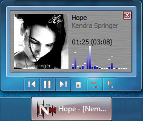
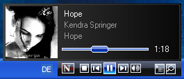

|
Taskleiste und Tray
|
Taskleiste und/oder Tray
Steuert das Verhalten von Nemp in der Taskleiste. Wenn Sie Windows 7
benutzen, sollten Sie den Eintrag in der Taskleiste niemals alsblenden
lassen. Denn dann verschwinden die Buttons aus dem Vorschaufenster, mit
dem Sie Nemp auch im minimierten Zustand steuern können.

Benachrichtigung eines Deskband
Nemp kann auf Windows 2000/XP ein Deskband installieren, dass sich
in die Taskleiste einbettet. Vista und Windows 7 werden dabei nicht
unterstützt. Über dieses Deskband können Sie Nemp
steuern, auch wenn Nemp minimiert ist.
